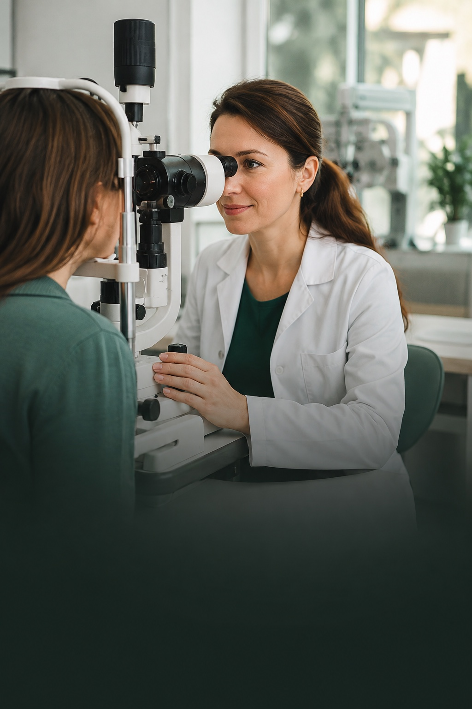

Closer to home.
EU-hosted data is part of Ophelia's approach to caring for sensitive patient information.
Your conversation, your full attention. Ophelia listens and drafts the notes, so you can stay with the person in front of you.
Built for eye care. Designed around the patient.
Speak naturally. Ophelia puts the details into Extended SOAP sections. You check the draft, make it yours, and decide what happens next.
“My right eye has felt dry and gritty for two weeks. It's more noticeable in the evening.”
“Let's take a closer look. I'll add the examination findings, then we'll talk through the next steps.”
Right-eye dryness and grittiness for two weeks. More noticeable in the evening.
Interactive sample only. No recording, patient data or EHR connection.
A useful note is only the beginning. Ophelia is designed to prepare the structured information your existing EHR needs.
Integration workflow shown as a concept. Availability depends on your EHR.
Built around ophthalmology, with specialist medical AI models and clinical insight. From the patient's own words to the details of an eye examination, Ophelia gives your notes the structure they need.
Developed with ophthalmology at its heart.
Keep the conversation going. The documentation can follow.
Built for European clinics, with EU hosting, privacy-conscious workflows and the clinician in control.
EU-hosted data is part of Ophelia's approach to caring for sensitive patient information.
GDPR requirements guide the design. Your clinic's data arrangements should be clear before you start.
Notes and follow-up drafts stay yours to check, edit and approve before entering the patient record.
Discover a voice assistant made for eye care, and a working day with more room for your patients.